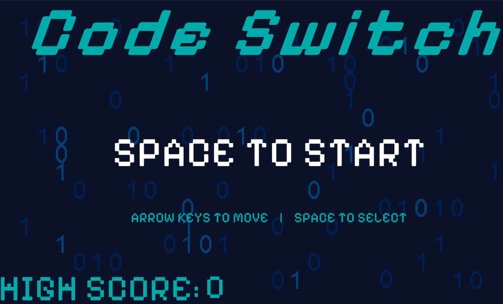
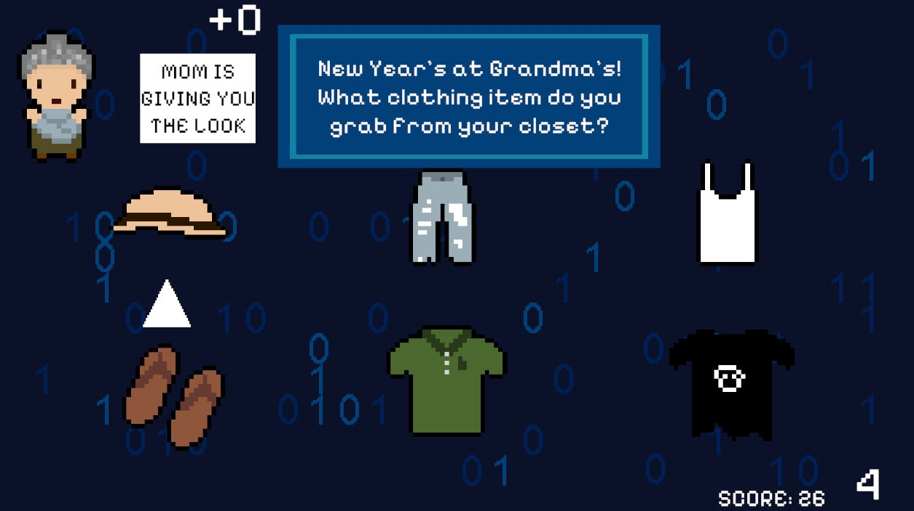
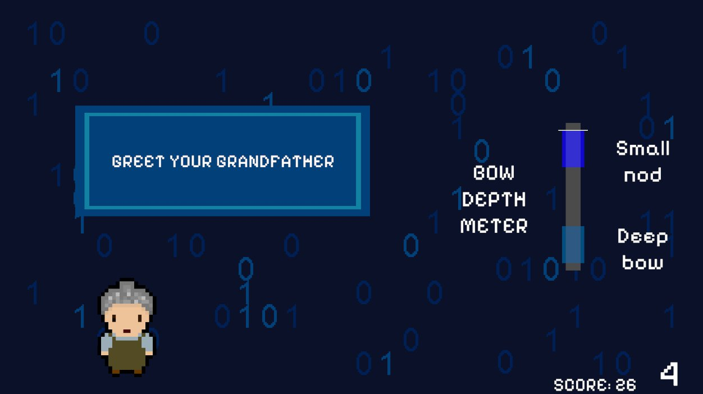

Code Switch is a keyboard arcade game about code switching between Japanese family culture and American peer culture. I made it in Unity for my club, the 5C Nikkei Student Union, as part of an "Arcades Everywhere" assignment for Interactive Media Studio at Pomona, over about two weeks.
The Idea
Code switching is moving between two sets of social rules depending on who you're with. For a lot of Nikkei (Japanese American) students, that means acting one way with grandparents and at family dinners and another way with friends and teammates. Most people who do it never think about it, because the switch happens on instinct, so I wanted to turn that instinct into the game's mechanic.
I pictured it set up at an NSU social event, with a keyboard and a monitor, short rounds, a crowd watching, and the next person walking up. It's made for people who already live this, so I was going for recognition and pride, not teaching anyone the "right" way to act. The answers are my own read from my own experience. Classmates outside the community can relate to code switching in general but will miss some of the Japanese cues, and that gap is on purpose, since it makes a usually invisible fluency visible!
How the Design Changed
My first pitch was a single game. A context would flash on screen, like a call from grandma or a gift from an aunt, and you'd answer with two keys that meant different things depending on the context, which flipped without warning. While brainstorming, I switched to a WarioWare-style format with a start screen, three quick minigames picked at random, and a results screen with the high score, and that original idea became one of the minigames.
After the in-class prototype, I narrowed the controls to just the arrow keys and space bar, with an on-screen cursor showing what's selected, and dropped the mouse completely. It felt closer to a real arcade cabinet, which is basically a joystick and one button, and it meant anyone could walk up and play without an explanation.
The Minigames
- The Gift: your aunt hands you a gift, and the right move is to politely refuse first. The answers shuffle every time.
- Context Flip: the setting switches between dinner with Obaachan and dinner with friends, and the same question has a different right answer for each. Catching a switch right away scores a bonus.
- Honorific Rush: people flash by one at a time, and you pick -sensei, -san, -chan, or just their name.
- Bow Depth: stop a swinging marker in the right zone, since a grandparent or boss calls for a deep bow and a teammate only needs a nod.
- Don't Eat Yet!: at family dinner you wait for Baachan to say "itadakimasu," but with friends you can just dig in.
- Pick the Fit: choose the right outfit for New Year's at Grandma's. (The skull rock tee isn't it.)
A Host character reacts to every answer with a pose, a sound, and a random line from that minigame's pool, like "WHY DIDN'T YOU WAIT?" when you eat too soon. Scoring only ever goes up, with base points for a right answer plus a speed bonus, which keeps it fun for a crowd.


How It's Built
Part of the assignment was being able to explain every line in critique, so the code sticks to what our course tutorials covered. A GameManager that persists between scenes picks three minigames at random without repeats, adds up the score, and checks the high score. Each mechanic has one script and each scenario has its own scene, so The Gift and Pick the Fit share a script with different content. Prompts, answers, timings, and the Host's lines all live in the Inspector, which means I could change content without touching code.
I came up with the concept, the scenarios and their answers, and the minigame designs, made all the pixel art in Aseprite, and built and wired every scene in Unity. I used Claude Code to write the C# scripts, kept to the techniques from our course, and made sure I could explain how each system worked for critique.
Problems I Solved
Typing "START" showed up as "w~s~" because the pixel font was a variable font that TextMeshPro couldn't read, so I rebuilt the font asset and raised the atlas padding. My start animation seemed to do nothing until I realized it was placed in Canvas pixel coordinates instead of world units, so it was playing far off camera. Spamming space in Context Flip scored forever because an unassigned text field crashed the script halfway through checking an answer, leaving the same answer on screen.
Through This Project I've Learned and Practiced